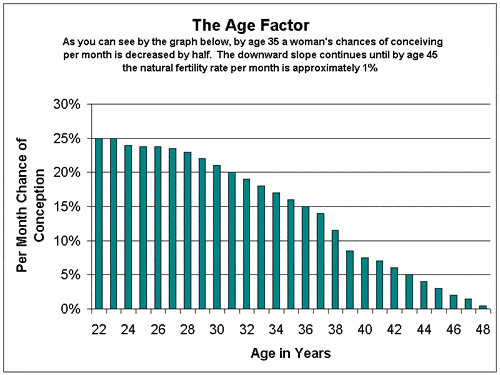

Daryush "Roosh" Valizadeh created ROK in October 2012. You can visit his blog at RooshV.com or follow him on Twitter and Facebook.


The biggest travesty that has happened to women in the past 70 years is not misogyny or sexism, but being put on the same education and work timeline as men in spite of having a completely different biology. Millions of women suffer every day because they’re living lives that were designed and optimized for men.
Most women lose the ability to have children without medical intervention at the age of 40. After that, it gets extremely hard for a woman to naturally conceive, and even if she manages to do so, she is 17 times more likely to transmit birth defects to her child than having conceived at age 20. Even at 35, a woman already sees a huge drop in her fertility.

The culture infects young girls with an obsession on career so that they attend an expensive university and rush to work immediately after graduation, all with the grand design of enslaving them into the rat race during the most fertile period of their lives, sharply reducing the number of children they can have. If a girl is lucky, she may have twenty fertile years starting at age 18, but during that time she’s expected to get a degree, move out of her parent’s home into a “vibrant” big city, establish a career where her skills remain in high demand, fall in love with a man who makes more money than she does, marry him, feel financially secure enough to have a family, and then have her first child. Does this at all sound reasonable to you when her male counterpart has double the time she has? My father had his last child in his 50’s. Can a woman do that?
Let’s assume for a minute that I won’t advocate for traditionalism or make the argument that a woman shouldn’t be able to make life decisions on her own, as I have before. What kind of solution remains that would allow women to pretend to be businessmen while still being able to have children before it gets too late? It is to get married and have children before attending university. If a woman does that, she merely has to wait until her last child enters kindergarten to enroll in whichever brainwashing factory she wants, graduate within four years through mostly day-time study, and then begin working while her children are being brainwashed themselves in public schools.
If we assume that a woman who got married early had her last child at a still pert 26, that means she’d be ready for university at 31 and enter corporate hell at 35. Based on current life expectancy figures, that gives her six more decades to decorate her cubicle and LARP as a businessman.
Right now a woman may be thinking, “But men get a head start in your plan, that’s not fair!” Yeah, well, you’ll live longer than me, which is not fair either. My solution allows women to take advantage of their biology and have children when their body is most ready for it. All that’s required is obtaining the love and commitment of a man who is asked to impregnate a young woman who is family oriented and not a whore. That will not be difficult. In fact, if you fit this profile, send me a full body photo and I may wife you up, but please don’t wait until you’ve sampled numerous penises because then your brain chemistry will have degraded to such an extent that you will sabotage any future relationship that has genuine love from a man who wants to provide for you.
I’m sure you can find a dozen other logistical problems to my plan, especially concerning the economics of having one wage-earner support a family for at least five years, but I assume that the wife will know how to cook, grow basic foods in a garden, sew, and not want to display expensive possessions to internet nobodies on Instagram. The major hurdle is not finding a man willing to wife up a supple young bride, but finding a girl with half her brain still intact after her parents threw her into the mud pit of blue-haired feminist pigs.
If you are a young woman in high school, I advise you to skip out on university, live with your parents, work a basic part-time job to earn money for tasteful makeup and clothing, learn important homemaking skills, and then use the remainder of your free time to securing the love of a man who wants a family. Assuming your standards in men are realistic (hah!), it won’t take you more than a year to find a worthy contender, because what man wouldn’t want to lay down roots with such a family-oriented woman?
As a man who has spent only six years working in a corporate career, one that was actually somewhat interesting, I can guarantee that any job a woman takes will cause more damage to her happiness than not. Women should look at all the men who are quitting the rat race to become location independent and ask themselves why they are being convinced to participate in a rigged game that increasing numbers of intelligent men want nothing to do with. Ladies: you’re not missing out on delaying your career for a few years. It’s better to focus first on creating a family first, while you still can.
This article was originally published on Roosh V.
Read Next: Why Women Shouldn’t Work